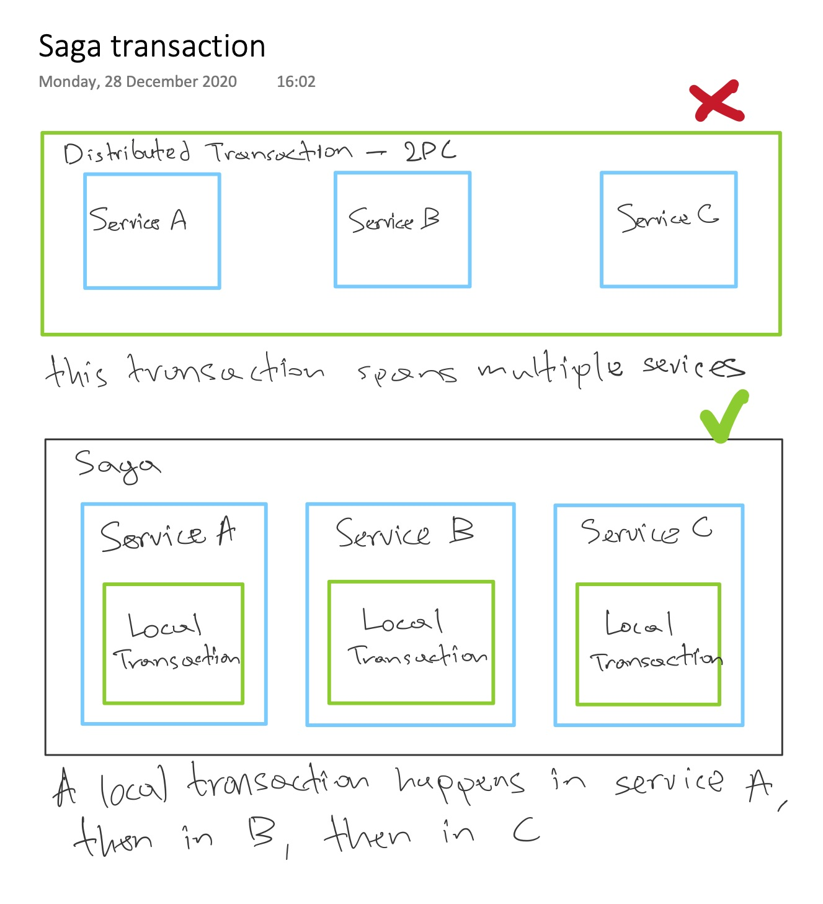
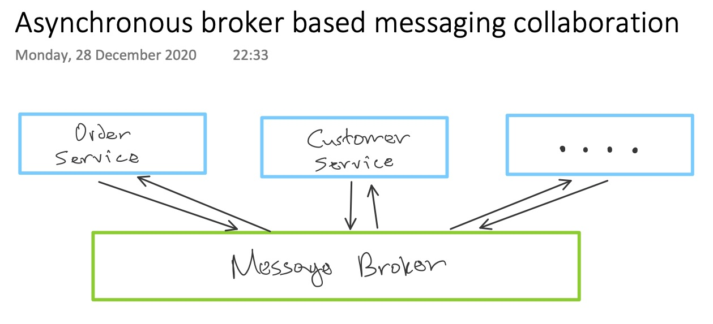
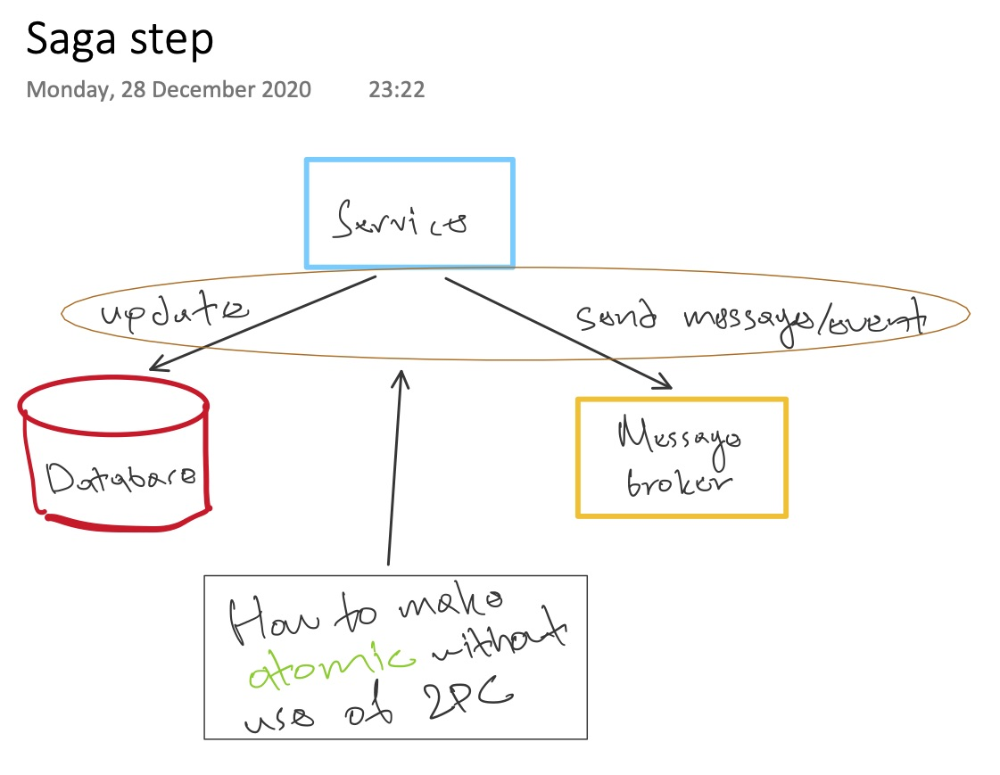
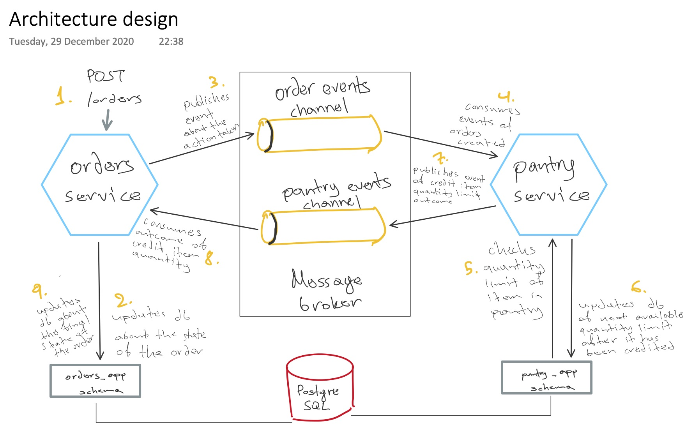
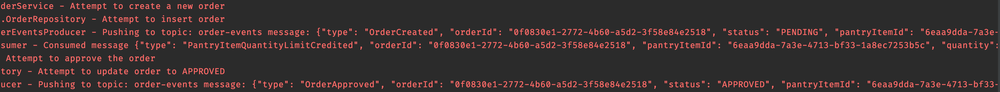
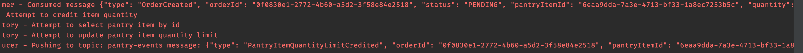

5 minutes
Choreography saga – asynchronous microservices
Background
Well, where to begin…
Saga is a flow of transactions that updates each service and publishes a message to trigger then next transaction step. This pattern is not something new. It came from a paper back in 1987
On a very high level, Saga does not use a distributed transaction; it breaks down the transaction into a series of local transactions in each one of the participating services.

Now that microservices architecture is more frequent when orchestrating
a system, plain http request/response communication between microservices can be hard
to maintain. In fact, it increases coupling, because both of the services
need to be available at that specific moment for a flow to happen.
They’re bound to the request/response model.
Saga design challenges
API design
Although, a saga internally uses asynchronous communication, the very first step that starts the saga might be triggered synchronously, via an http request like so
POST /orders
So now we have to cover the issue of when we send back the response.
Implementing rollbacks
In a distributed transaction you can execute a rollback statement
that undoes all the updates that have been made so far. But in a saga, given
that we have local transactions in the services required to execute
a flow; if one of the steps fails, the steps required before that have already
committed their changes into their local databases. So we have to explicitly
undo all that.
Lacking the Isolation property in ACID – ACD
The execution of steps of one saga can interleave with the execution of
steps of other sagas. That may increase database anomalies such as: dirty reads, etc.
So we must use countermeasures such as semantic logging, which means
the state of the Order is PENDING until it becomes APPROVED or REJECTED.
Saga participants communication
As mentioned above, synchronous communication, such as REST, introduces temporal coupling, because both client and server need to be available.
So in sagas it makes more sense to be implemented using asynchronous broker-based messaging collaboration where the participants communicate through a message broker; that gives us at least once guarantee delivery.

If we have those properties, means that even if a saga participant becomes unavailable, the message broker is going to keep retrying the delivery of that message until the other participant will process it. That guarantees the saga will eventually run to completion.
Saga step
In such fashion, a saga step is a transaction local to a service.
- Service executes a transaction that updates its database
- And will also send a message or publish an event
That will trigger the next participant in the saga to execute its own local transaction.
The interesting thing here is how to make those actions in a saga step atomically by not using a distributed transaction.

Saga patterns
A Saga is a sequence of transactions, right? And, mentioned earlier, we saw that communication between those transactions are based upon events. So the next thought that comes to mind is that, there should be some logic somewhere that knows what saga step is executed after another – either a failed or a successful step.
Here are the two saga patterns based on decision-making aspect:
- Choreography: distributed decision-making
- Orchestration: centralized decision-making
More details about them here 👈
Putting a stop here
Well this post is not supposed to discuss all the implementation details and challenges on how to implement sagas. It would be a book to do that, and there are out there already!
My demo app
I wanted to try to implement a saga on my own, using as much lightweight libraries as I could – to have more control and get more knowledge.
So the concept is similar to orders-and-customers. The idea is that you want to order a pantry_item for which you’ve put a quantity limit. For example, you can’t have more than 4 pieces of broccoli in your pantry at home.
In that fashion, we have:
- orders
- pantry
Orders is the service where you can create/update orders about pantry_items
Pantry is the service that manages if an order about a specific pantry_item has exceeded its limit or not.

Logs
As seen in the design picture above, the saga starts with a typical http request to create a new order The correct way to read the logs is to take a look at the pantry logs after reading the in the orders logs
"Pushing to tpic: order-events message: {...}"
After orders publishes a message about the order creation, that’s where pantry starts its lifecycle, consuming that message.
Orders service

Pantry service

Github Repo
My demo orchestration saga is 👇
https://github.com/pagidas/kotlin-kafka-choreography-saga
I put as much effort as I could to implement it without using heavyweight frameworks. So it’s all out there, explicitly, from the kafka consumers/producers, basic jdbc for postgresql, up to simple web controllers. The only fancy bit might be the use of Kotlin which I find myself playing around with lately.
I think my demo app, along with the talk I’m referencing down below, could be a great start to get your hands in sagas and their challenges
That’s it, folks, I hope you enjoyed!
References
It’s all here! click me!
An in-depth talk about asynchronous microservices by Chris Richardson